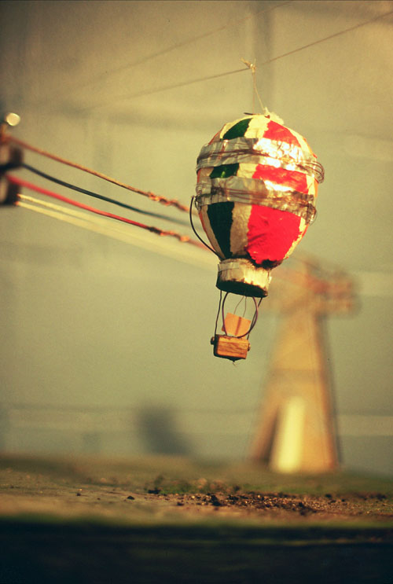
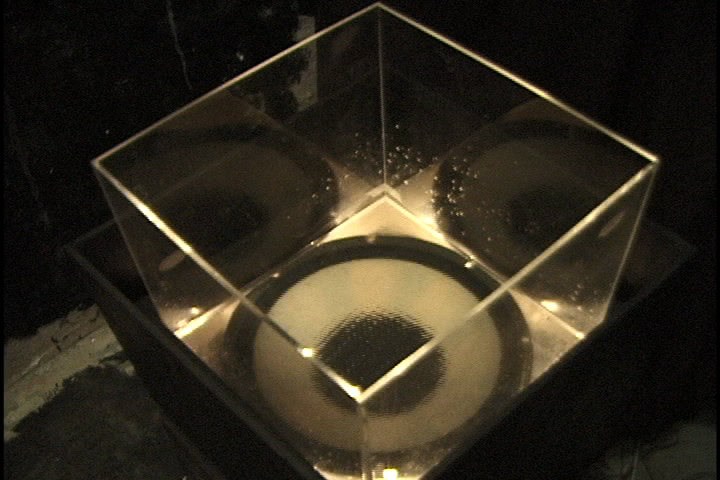
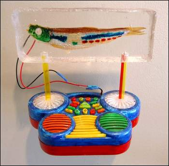

people doing strange things with electricity
The seven million twelfth dorkbot-nyc meeting took place on Wednesday, April 6th, 2005, 7pm at Location One in SoHo.
It featured the lovely and talented:
 Daniel Greenfield: Little Disasters
"Little Disasters" is a series of miniature reenactments of accidents and acts of sabotage. The scenes, which draw inspiration from reality disaster programs and media accounts of current wars, are played out in either a pre-scripted sequence, or are influenced by audience participation, and videotaped. The Dorkbot presentation includes live demonstrations of several dioramas.
http://www.inkdropinc.com/four/art/balloon.htm Mike Rosenthal: The Travelling Sound Museum and Other Works in Progress
A look and listen to three sound sculptures that are currently in development. I will show slides of the works, play some audio examples, show a video of one in action, and bring in an ancient sound jar containing rare snippets of sound from the year 1643! I will also give away my idea for a traveling sound museum absolutely free. Each of the works deals with the visual properties of sounds and the ways in which we interact with audio in a gallery setting.
http://www.tempaural.net Tom Bogaert: Singing fish and other oddities
Tom will present a number of recent projects, including a singing fish, phone-triggered electronics, and a futuristic machete...
bogaertdeleeuw at optonline dot net
Some images from the meeting are here.
(Thanks to Casey Opstead & Location1 for helping out when Douglas forgot his camera!)